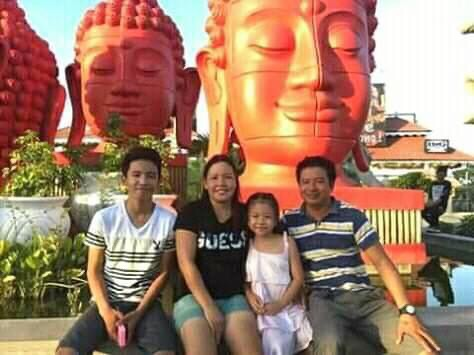
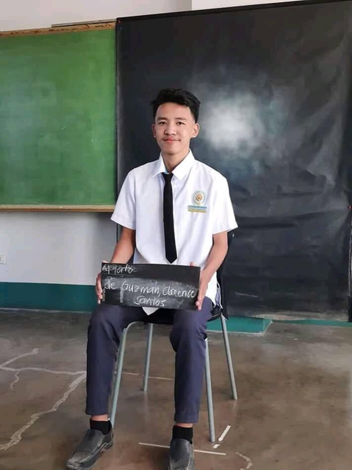
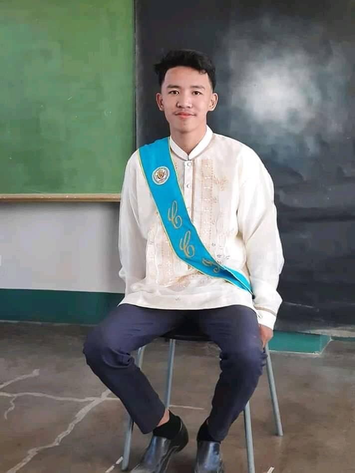
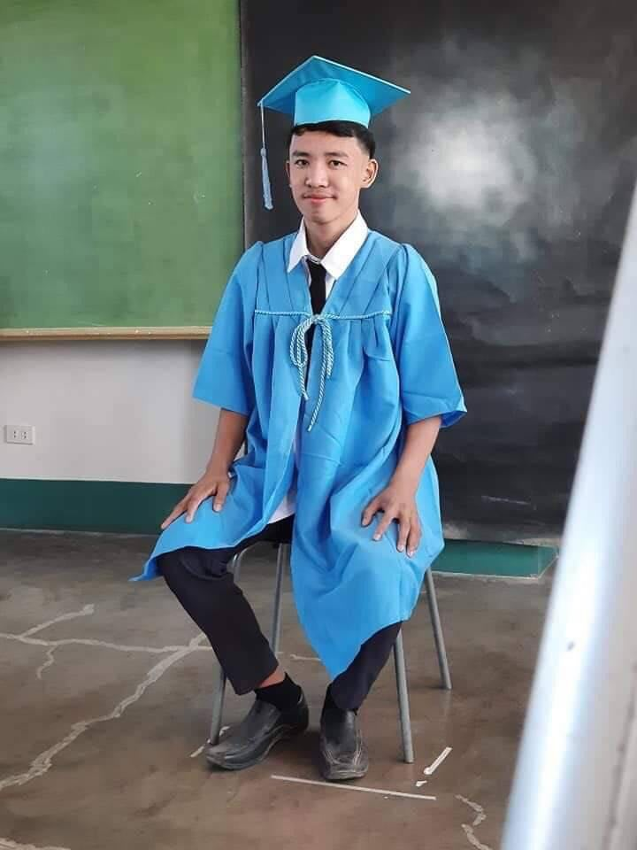

My Authobiography
My name is Clarence De Guzman i was born on the March 27,2002
in Cabanatuan City My parents were Raymond H. De Guzman and Maricar De Guzman and my sister were
Clarisse S. De Guzman
We are living
on Umangan Aliaga Nueva Ecija , The Tagalog is the language I speak or use in my communication
the barangay umangan is a peaceful and quiet province in nueva ecija
the chaos is rare and people live happily so
i grew up quietly and avoided the chaos of the city
Growing up in the province is fun you have a lot of kids to get to know and fun to play, i like to play farm chase and basketball with my playmates.
Until I started studying in the city with my mother who looked after me at Cabanatuan East Central School
I had fun studying elementary school in the east
I met many children and different kinds of people who were very different children quite advance the game like technology and computer
I found out that there is a big difference between the province and the city based on
my expirience here and here I started loving technology
  
When I was in high school I became aware of the reality of life where there was a lot of fighting. My studies in high school were not easy, many were motivated and I was fooled by the computer and did not go to school for 2 months or a grading study. But I realized what I was doing was wrong and I continued I passed everything I needed in my class for me to catch up and continued I finished my grade 8 at NEHS and I continued my grade 9 studies at UNHS in our area. and I sober up and improved my education and I was moving up grade 10 and I went back to Cabanatuan City to study senior high in the BSIT course and was able to finish with honors
My dream is to become a Computer Engineer because in the modern generation many people are interested in technology
and one of me don so I want to be a computer engineer because I want to help the development or development of our community
by making modern computer technologies that can help more our country to expedite and facilitate activities in our country and
of course to help my parents with this great job opportunities
My hobby is watching anime, and my favorite anime is One Piece My fantasy dream is to become a Pirate
Kaizoku no o ni naritai!!!